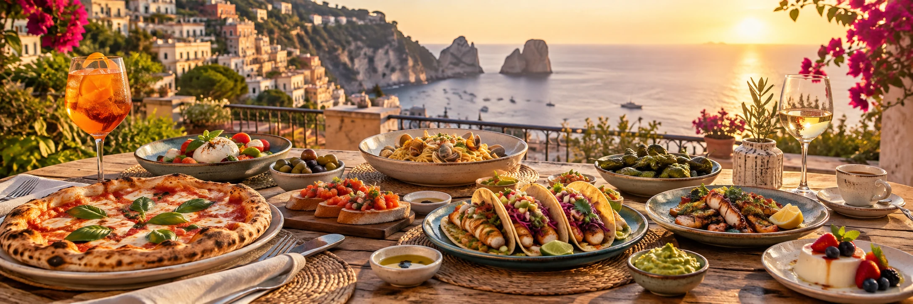

VIAGGI E SAPORI
Gli americani mettono il cibo al primo posto in vacanza
中文：美国人度假时把美食放在首位
Un sondaggio rivela quanto ristoranti, specialità locali e consigli influenzino i viaggi degli americani.

中文：美国人度假时把美食放在首位
Un sondaggio rivela quanto ristoranti, specialità locali e consigli influenzino i viaggi degli americani.
